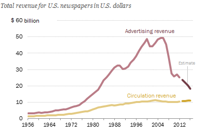

Europe vs. The Internet
Kaden Uhlig, March 18, 2019
Conspiracy theorists have been crying out against secret government plans to spy on and control the citizens of the world for decades. For the most part, these claims are ignored – they're either clearly baseless, full of paranoia or don't actually have an impact on day to day life.
But a law being considered by the European Union threatens to make at least part of that hysterical fiction fact. It's the classic example of how even the best of intentions can go wrong: with the initial goal of reducing copyright infringement, they might manage to break the internet as we know it. With their suggested solutions, internet giants like Google will solidify their monopolies and gain total control over user privacy, sites dedicated to sharing knowledge will be crippled, and fledgling companies trying to eke out an online presence won't have the chance to get off the ground. It's truly a poorly thought out decision, the first step to subjecting the internet – a powerful tool that's made knowledge accessible for millions – to mass surveillance and censorship.
Why changes are needed
One of the first places to look for evidence that current copyright laws are not sufficient would be the film and music industries, which are the primary victims of copyright violations. According to the Motion Picture Association of America, $58 billion are lost every year due to copyright infringement in the United States (MPAA). They went on to say that a staggering total of 373,000 jobs have been lost for U.S. citizens. Admittedly, that doesn't provide data on the European film or music industries, but it demonstrates the magnitude of the issue. Clearly, some action is needed to correct the situation, and that's what the European Parliament is trying to achieve, specifically with Article 13 of the proposed bill.
The next industry at play is journalism. As the following graph from the Pew Research Center shows (again unfortunately only available for the U.S. market, although the European market should follow similar trends), total revenue for newspapers has dropped drastically in the last twenty years, seemingly simultaneous with the rise of the internet and début of online newspapers (Pew Research Center).
Between 2006 and 2012, revenue dropped from $60 to $35 billion. That must be an immense shock to the industry, and there seems to be no sign of the curve leveling out soon. It's understandable to think that the internet may play a role, given that during the same time period, the number of Europeans who had never used the internet dropped from 41% to 22% (Eurostat). Journalism and with it democracy itself, which relies on having a multitude of opinions and viewpoints discussed publicly, is experiencing a crisis – and the EU hopes to fix that.
The proposals: Articles 13 and 11
The proposed solutions are seemingly simple. They're split between two articles in the new bill: Article 13 and Article 11. To solve the issue of piracy and copyright infringement, Article 13 suggests mandating content filters on every site hosting user-generated content (Reda, Upload Filters). This makes sense: each website should be responsible for keeping its servers clean of illegal content. If they refuse to do so, that's clear support of piracy, thus making the websites themselves liable for the crimes.
As for newspapers and journalism, the Parliament wants to introduce the so-called snippet-tax with Article 11 – to include a snippet of any journalistic work, one must first pay for a license from the responsible publisher. This is intended to target giants like Google, Facebook or Twitter, which maintain news feeds by linking to newspaper articles written by third-parties (Reda, Extra copyright for news sites). Because they pull in advertising revenues for these news feeds, charging a tax on the text snippets would theoretically divert more of that revenue to the newspaper industry.
Placing privacy in the hands of monopolies
Unfortunately, these measures come with serious side effects. (The smooth, quick voice of a commercial’s fine print comes to mind: “Common side effects may include nausea, heart failure or death”.) First and foremost is the requirement to filter all user content for copyrighted material – it's painfully clear that none of the supporters of Article 13 are software engineers. To implement such a filter, more than one hurdle has to be cleared.
First, you have to have a database of all copyrighted material that should be checked against. Now, that's not everything ever copyrighted, just everything requested to be checked for by copyright owners. That may not sound as bad, but with every major producer, publisher and film studio submitting all of their intellectual property, this database will swell to immense proportions. Then, code to differentiate between copyrighted material and similar works, legal derivations and fair-use would be incredibly complex and avoiding false-positives would be nearly impossible.
Those difficulties alone make it impossible for most companies to implement without relying on a third-party. From a business perspective, that would be unavoidable – either spend millions developing one’s own filter, or pay a third-party for theirs. The only company with similar technology is currently Google, which uses an advanced machine-learning system to analyse all uploads to YouTube, pouring through more than 100 years worth of video and music every day (Stewart).
The only option left to websites throughout the world, from mega-corporations like Facebook to the smallest forum, would be to filter everything Google’s power, should Google provide the service for free (at cost of data privacy, no doubt) or to pay Google. Does this sound a little frightening? It should. Putting every piece of user-generated content – that is, your Twitter post about the election results, your Facebook photos of your children to your personal Google Drive uploads – would be submitted to one company for review before being allowed online.
Privacy would be gone, freedom of speech, freedom of thought would be one short step away from disappearing – and not just in one or two countries: the internet is global. Whoever gained control over the filters would have control of the internet. If Google doesn’t yet have a monopoly on the internet, it certainly would then.
The end of cooperative learning
That’s not the only side effect. This law would come down even harder on knowledge-sharing platforms than social platforms. Websites like Wikipedia, StackExchange and GitHub. Imagine trying to improve a Wikipedia article by quoting a journalist and being censored, because you don’t have a license, or trying to upload a patch to an open-source project on GitHub and being told that you will have to request human arbitration because your code is too similar to existing code samples.
The worst part still wouldn't be the fact that false-positives could cause some urgent security flaw to go unchecked, or that delays might occur in Wikipedia edits – the worst part is the introduction of censorship in arenas that stand for freedom of information. Open-source, Wikipedia, and StackExchange, among others, stand for making information accessible to all. Learning should be free. Free as in beer and free as in speech, as the open-source movement loves to say.
Some may claim that this freedom won't be restricted by the new copyright reforms. That's certainly not the intent behind them. But why risk it? Why even take one step closer to allowing full censorship to take hold? As a group of academics and experts, including Tim Berners-Lee (who invented the internet itself), Jimmy Wales (founder of Wikipedia) and Vint Cerf (an early internet pioneer), said in an open letter to the European Parliament (Cerf, et al.):
Article 13 takes an unprecedented step towards the transformation of the Internet from an open platform for sharing and innovation, into a tool for the automated surveillance and control of its users.
On top of that danger, the current proposal seems to actually be in direct conflict with existing European laws. Julia Reda, Member of the European Parliament, is opposed to the bill, claiming that it is incompatible (Reda, Upload Filters):
with existing EU law: The E-Commerce Directive forbids general monitoring obligations, which even the European Parliament Research Service says Article 13 would establish. ... [and] with the Charter of Fundamental Rights as interpreted by the ECJ: It violates the principle of a fair balance between competing fundamental rights laid out by the European Court of Justice in case law.
This isn't a small problem. The democratization of information is a defining factor of this era, and the European Parliament’s suggested reforms will directly – if unintentionally – provide an attack vector that could morph that democracy into a dictatorship. It’s not a risk we should take.
Threats to freedom of the press
Another unintended side effect will be seen at the hands of Article 11. Because of the required link-tax, which was intended to support newspapers by supplementing revenue, tech companies like Google or Facebook will be left with the choice of paying recurring fees in order to display newsfeeds and current issues, or simply removing that feature from their services.
When one considers the fact that both Google and Facebook – as well as other similar companies – simply provide those links as convenience features for their customers, rather than actually earning any money by doing so, it becomes clear which of those two options might seem most attractive to them.
In fact, Google already did this once before. In 2014, the Spanish government passed a similar law, leading Google to simply take away any newsfeeds for the entire country of Spain. Google’s Head of Google News, Richard Gringas explained (Gringas):
This new legislation requires every Spanish publication to charge services like Google News for showing even the smallest snippet from their publications, whether they want to or not. As Google News itself makes no money (we do not show any advertising on the site) this new approach is simply not sustainable.
If companies like Google cease to provide easy access to news articles, many citizens, especially the more digitally inclined, will simply stop reading as much news. This will just hurt the press, as it will simply reduce their online revenue even further, thus damaging the freedom the press does have to function independently of the government.
What we can do
In the end, it is clear that piracy and copyright infringement are significant problems that have yet to be satisfactorily addressed by society, but the European Parliament’s copyright reforms are not the right solutions. Too much is at risk, too much is being traded for industry profits. It’s not worth losing individual privacy, not worth stifling knowledge exchange and innovation, not worth taking one step closer to truly Orwellian surveillance.
What is the solution? I don’t know. But I do know that for today, the next step is recognizing and fighting the threats to the freedom of people everywhere posed by Articles 11 and 13. Many Europeans are joining protests in the streets, signing petitions or contacting their representatives. Short of that, simply raising awareness of the issue by discussing it with friends and family, or sharing a link to an article in social media (while that’s still free) will help stop the bill from getting any further.
After that, we can step back and consider solutions – thoroughly, and this time with consideration of what the side effects might be. To end with the wise words of the social activist and Supreme Court Justice Louis Brandeis, “The greatest dangers to liberty lurk in insidious encroachment by men of zeal, well-meaning but without understanding.” (Brandeis).
Works Cited
Cerf, Vint, et al. “Article 13 of the EU Copyright Directive Threatens the Internet.” Electronic Frontier Foundation, 12 June 2018, https://www.eff.org/files/2018/06/13/article13letter.pdf.
Eurostat, “Individuals who have never used the internet.” Eurostat, Eurostat isoc_ci_ifp_iu, 31 January 2019.
Gingras, Richard. “An update on Google News in Spain.” Google Europe Blog, 11 December 2014, https://europe.googleblog.com/2014/12/an-update-on-google-news-in-spain.html.
MPAA, “MPAA Statement On Strong Showing of Support for Stop Online Piracy Act.” Scribd, 16 Dec. 2011, www.scribd.com/document/85454091/MPAA-Press-Release-Dec-16-2011.
Pew Research Center, “Newspapers' Circulation Revenue Climbs Steadily Even as Advertising Declines.” Pew Research Center 31 May 2017, www.pewresearch.org/fact-tank/2017/06/01/circulation-and-revenue-fall-for-newspaper-industry/ft_17-05-25_newspapers_revenue3/.
Reda, Julia. “Extra copyright for news sites.” Julia Reda, 2018, https://juliareda.eu/eu-copyright-reform/extra-copyright-for-news-sites/.
Reda, Julia. “Upload Filters.” Julia Reda, 2018, juliareda.eu/eu-copyright-reform/censorship-machines/.
Stewart, Margaret. “How Youtube Thinks About Copyright.” TED2010, 2010, https://www.ted.com/talks/margaret_stewart_how_youtube_thinks_about_copyright.
Supreme Court of the United States. Olmstead v. United States, 277 U.S. 438., page 479, 1928. Library of Congress. https://cdn.loc.gov/service/ll/usrep/usrep277/usrep277438/usrep277438.pdf